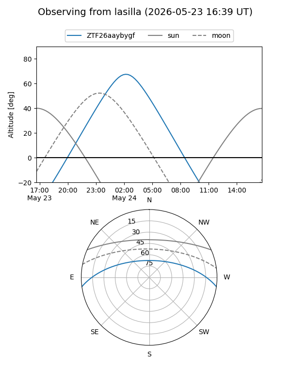
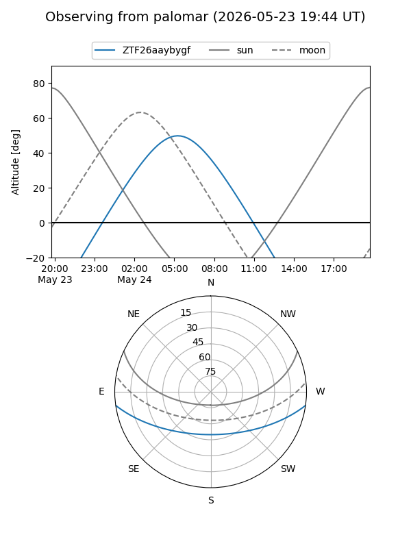

ZTF26aaybygf
Target ZTF26aaybygf at 2026-05-24 07:22
Aliases and brokers:
lsst-FINK: link
lsst-Lasair: link
lsst-ALeRCE: link
ztf-FINK: link
ztf-Lasair: link
ztf-ALeRCE: link
alt names
ZTF26aaybygf (ztf,fink_ztf)
Coordinates:
equatorial (ra, dec) = 203.5457,-6.67212
equatorial (HMS+DMS) = 13:34:10.98,-06:40:19.62
galactic (l, b) = (321.4946,+54.65175)
Flags:
Photometry:
last ztfg=19.24
1 ztfg detections
Lightcurve
Visibility


Additional plots